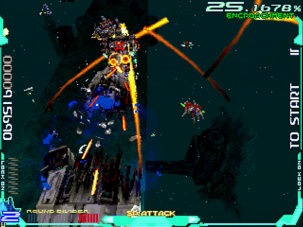

意識領域(Consciousness Part)/水中面
後半に持ってくると、やっかいな弾を連射してくる難所です。しかし前半でランク調整すると、ボス戦前で1000点台というぐらいラクにさばける面でもあります。個人的には、2面までに配置しておくのがオススメ。
ちなみに、攻略本のインタビューいわくベースは「サウスゲート」だそうです。
道中
チェックポイント
1つ目
8機目のE081がロック可能になった直後
2つ目
道中2機目のM072の本体がロック可能になる直前
通常パターン
1面の場合
開幕は例によってアイテムキャリアーを右から出し、ハイパーレーザーで水中大型レーザー砲台3とE024もろとも倒します。上手くやると一発で全部壊して、しばらくがらんどうです。

続くM025も、本体をハイパーレーザー。後続のE616ごとまとめて倒します。この後1つ目のチェックポイントなので、侵食率に気を配っておきましょう。
配置タイプ3の場合、E097・E208・E049の3種類がまとめて襲いかかってきます。特にE049のミサイルは予想外の角度から食い込むので、ここでラウンドディバイダーを使ってしまうのがお手軽だと思います。
1機目のM072は姿が見えずとも、ウォーターチューブの反対側からロックして破壊できます。あらかじめ処理しておき、左からアイテムキャリアーを出してハイパーレーザー。爆風でE5310を迎撃し、倒してしまいましょう。
2機目のM072もさっさと破壊し、ロックを吸われないようにします。右から来るM025へハイパーレーザーをかますと、爆風でまわりの敵もろとも倒せます。そこで弾消しが起きるので、左から来たM025に撃ち込めばサクッと始末できるでしょう。
同じ要領で、終盤に現れるM44b11も手早く処理できます。向かって左側をフルロックできたら、目一杯ショットを当てながらハイパーレーザー。自機側にスライドしてきた2機目ともども、爆風とレーザーの連射で撃破するという寸法です。
2・3面の場合
この領域も配置タイプで敵編成は変わりますが、根本的にパターンを変えるほどではありません。また、多くの敵が下から出てくるため、ロックオンサイトを手前に引いて速攻すれば、ほとんど撃たせずに倒せるでしょう。
ランク調整パターン
1面の場合
アイテムキャリアーのキャリアー部分を除いて、敵を倒さずやり過ごします。E024は自機の手前で自爆するため、画面下端で横にだけ動けば安全です。水中大型レーザー砲台3は、乗っかって封じましょう。
この場面で現れるE0494機は、ミサイルを封じられます。左端に張り付き、スコア表記の下3桁の辺りに自機がおさまるよう配置すると良いでしょう。

侵食率が90%に達したら、以降はE9912とスペシャルパワーアップアイテムを落とすE616だけ、ショットで倒します。ランクがとても低いため、攻撃してくるのはM072・M025・E1413・M44b11ぐらい。大回りに外を避ければ、問題無くさばけます。
2面の場合
開幕～M025のくだりまでは、通常パターンと同様に対処できます。ただし、比較的おとなしいE5014を逃がすなど、侵食率を見て調整はしましょう。
続くE097・E208・E049はぽんぽこ弾を吐いてくるため、わりと脅威です。といってまとめ撃ちすると侵食率がガクッと落ちてしまうので、ここはショットをしっかり当てて倒します。ミサイルは結構な急角度ですので、真正面から向き合うように意識して下さい。
あとは侵食率60%を維持。M025やM44b11をハイパーレーザーで倒し、小型機は適宜逃がします。道を塞がれないよう、M072のレーザー砲は壊しておきましょう。
3面の場合
こちらも、序盤は2面の場合と同様に対処できます。1つ目のチェックポイントまで侵食率40%以上を維持するよう、気を遣いましょう。左端のE081が逃げ出そうとするのを合図に、ロックオンレーザーでまとめ撃ちします。
ここからはE208・E616・E049とラッシュが続くため、侵食率40%前後を維持しつつ処理します。端の方にいる2、3機については、無理に倒さずスクロールアウトで弾を減らすのも手です。例えば、画像右端のE616のように。
2つ目のチェックポイントを抜けたら、後はもうハイパーレーザーやまとめ撃ちでガンガン殲滅していきます。ボス戦までに、侵食率を30%台前半まで下げておきましょう。M072の本体とレーザー砲でロック数を稼ぐと、より美味しいです。
ボス「Sem-loke」
耐久力(単位：レーザー本数)
- 1面：150
- 2面：170
- 3面：210
- パーツ
- 肩：32
- 羽：9
- ミサイル：1
- ビット：2
基本的なこと
全体的に容赦の無い攻撃が多く、しかも短いペースで連発してくるため、事故が怖いボスです。
地味に肩が壊れてノックバック中は無敵という仕様も鬼畜。速攻しようとハイパーレーザーやラウンドディバイダーを連発したら、何割かムダに・・・なんて事も。
ちなみに、本体の耐久力が形態で分かれていないのは記載ミスではありません。このボスに限り、形態を超えて引き継ぐのです。
これは「第1形態で削れば、第2形態を速攻できる」という事ですが、裏を返せば「時間切れだと満タンの耐久力で形態移行する」という事でもあります。
第1形態
通常パターン
開幕は中央下から現れるので、レーザーを連射。前方に陣取ってきたら、ショットが全弾当たる位置でハイパーレーザーを繰り出します。
Sem-lokeと同方向にスライドし、もう一度ハイパーレーザー。あまり端っこへ行くと本体がロック範囲外へ出てしまうので、気持ち内側に。バラまき弾が飛んできたら、手前に下がって自機狙いをそらしつつ、左右からの弾を避けます。羽パーツにロックオンして、ゲージも溜めておきましょう。
ミサイルを画面中央へ逃げてそらし、バラまき弾を下がって避けたら、本体へ切り返してラウンドディバイダー。肩パーツがどちらか壊れて、水中に沈みます。ジャンプ時にも判定はあるので、当たらないようご注意を。
Sem-lokeの中でも惑わせてくるのが、ビットレーザー。実は自機の位置を基準に、1, 3基目は点対称15、2, 4, 5基目はX軸のみ反対で出現します。よって攻略法としては、なるべく中央に陣取ること。次のようなパターンを取れば、少ない動きでビットを壊せます。
- Sem-lokeが沈むぐらいで画面中央下部に行き、1基目(画像左上、破壊済み)を中央寄り上部に出現させる。
- 1基目を正面からロックオンして破壊すると、反対のX軸(＝中央寄り上部)に2基目(画像右上)が出現する。
- 以降、反復横跳びの要領で3, 4基目を同様に出現させ、破壊する。
もしもビットレーザーを避ける場合、収束して判定が生じるタイミングを覚えましょう。画像は参考資料で、レーザーに当たったショットだけエフェクトが発生しています。つまり、この太さと色になる前に抜けるか、さもなくばビットを壊す事です。
ビットを3基以上壊すか、一定時間が経つとSem-lokeが浮上。予告線を張ったのち、トレースレーザーを撃ってきます。自機付近の予告線から素早く形状を脳内で組み立て、当たらない位置に陣取りましょう。あとはミサイルに気を付けるぐらいです。

攻撃がループし、バラまき弾に戻ります。1面だと、このタイミングにハイパーレーザーで撃破できるでしょう。もっと欲張ると沈む前に倒せますが、肩パーツの耐久力に気を遣う16ため、少し手間です。しかしビットレーザー以降をまるまる飛ばせるので、慣れたら狙ってみて下さい。
ランク調整パターン
このボスは1面でランクが低いと、バラまき弾の自機狙いが消えます。したがって横からの弾の間を抜ければ良く、張り付きがとても簡単になります。2面以降は使えませんが、覚えておいて損は無いでしょう。
第2形態
の前に、第1形態の補足を少し。2面にせよ3面にせよ、もう一度はバラまき弾をやり過ごすハメになります。その上で撃ち込んで、形態移行させねばなりません。コツとしては横に撃たせる事です。意外にも弾数が少なく、裏に回り込めます。そのスキに、一気に本体へ肉薄して攻めましょう。
これだけでは自機狙いに詰まされるので、飛んできたタイミングで切り返します。するとまたバラまき弾とミサイルが来るので、これを抜けて横に撃たせて・・・と繰り返せます。2, 3回やれば、羽パーツをパージして形態移行するでしょう。
形態移行時は、中央奥に陣取るまで攻撃してきません。最大のダメージチャンスなので、ショットを全弾当てつつハイパーレーザー連打。運が良ければ羽パーツが壊れて、誘導弾を封じられます。画像のように誘導弾が見えたら、すぐラウンドディバイダー。ハイパーレーザーを何度か当てていれば、押し切って倒せるはずです。
1. E08「η Morphemes」 ↩
2. M07「Lexicon α5」 ↩
3. 水中大型レーザー砲台「Syntax A-8」 ↩
4. E02「β Morphemes」 ↩
5.M02「Lexicon M5」 ↩
6. E61「ω Morphemes」 ↩
7. E09「θ Morphemes」 ↩
8.E20「ξ Morphemes」 ↩
9. E04「δ Morphemes」 ↩
10. E53「υ Morphemes」 ↩
11. M44b「Lexicon φ2」 ↩
12.E99「Proto Morphemes」 ↩
13. E14「κ Morphemes」 ↩
14.E50「ρ Morphemes」 ↩
15. 厳密なものではなさそうで、おそらく画面を4分割して自機の位置を基準にしたぐらいです ↩
16. ラウンドディバイダーやハイパーレーザー中に壊れると、ノックバック中のダメージが無駄になります ↩